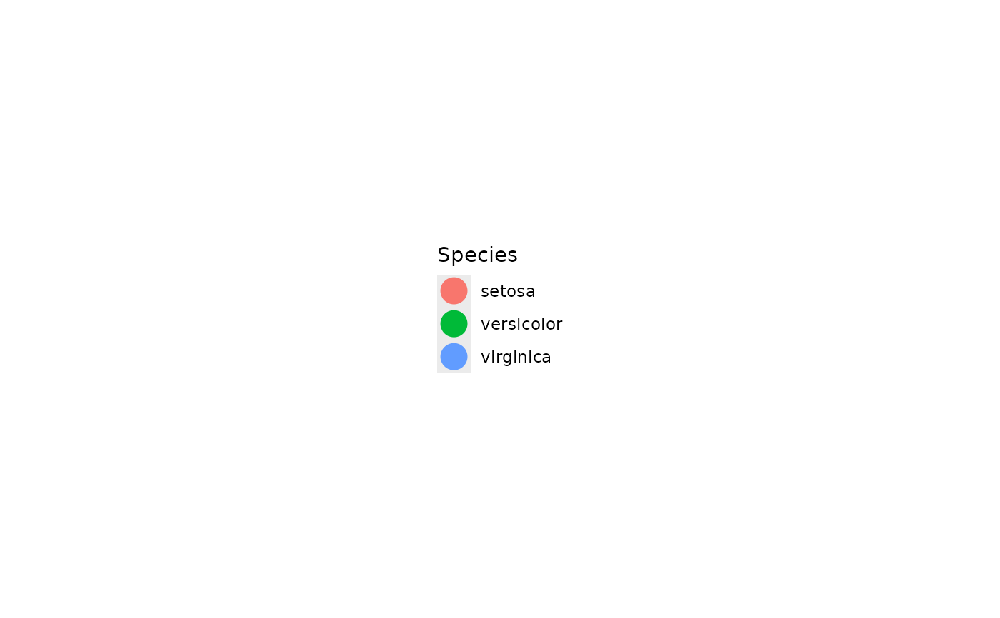
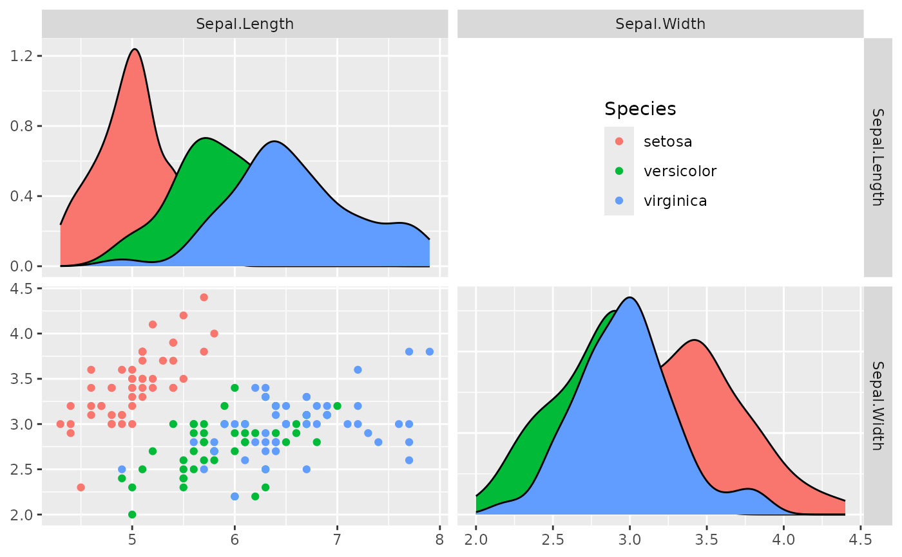

Plot only legend of plot function
gglegend(fn)
| fn | this value is passed directly to an empty |
|---|
a function that when called with arguments will produce the legend of the plotting function supplied.
# display regular plot ggally_points(iris, ggplot2::aes(Sepal.Length, Sepal.Width, color = Species))# Make a function that will only print the legend points_legend <- gglegend(ggally_points) points_legend(iris, ggplot2::aes(Sepal.Length, Sepal.Width, color = Species))# produce the sample legend plot, but supply a string that 'wrap' understands same_points_legend <- gglegend("points") identical( attr(attr(points_legend, "fn"), "original_fn"), attr(attr(same_points_legend, "fn"), "original_fn") )#> [1] TRUE# Complicated examples custom_legend <- wrap(gglegend("points"), size = 6) custom_legend(iris, ggplot2::aes(Sepal.Length, Sepal.Width, color = Species))# Use within ggpairs pm <- ggpairs( iris, 1:2, mapping = ggplot2::aes(color = Species), upper = list(continuous = gglegend("points")) ) # pm # Place a legend in a specific location pm <- ggpairs(iris, 1:2, mapping = ggplot2::aes(color = Species)) # Make the legend pm[1,2] <- points_legend(iris, ggplot2::aes(Sepal.Width, Sepal.Length, color = Species)) pm